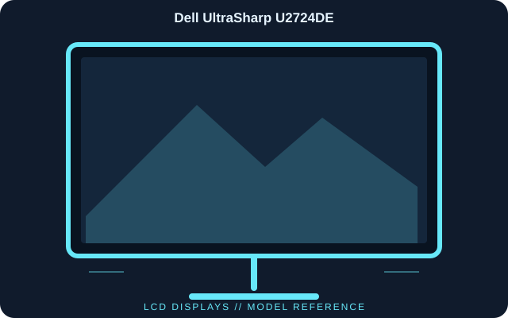

[ INDIVIDUAL COMPONENT // DISPLAYS ]
Dell UltraSharp U2724DE
A 27-inch QHD IPS Black productivity display built around a Thunderbolt 4 dock, Ethernet and high-refresh 120 Hz operation.

IDENTIFICATION: Dell UltraSharp U2724DE; 2024 generation. Verify the full model code, region and hardware revision on the unit label. Published specifications describe the identified configuration; its matching manual and label take precedence if revisions differ.
Published specifications
| Catalog subcategory | Lcd Displays |
|---|---|
| Exact model | Dell UltraSharp U2724DE |
| Panel / native resolution | 27-inch IPS Black LCD, 2560 × 1440 (16:9) |
| Native refresh rate | Up to 120 Hz |
| Typical brightness / contrast | 350 cd/m² / 2000:1 |
| Color coverage | 100% sRGB, 100% Rec. 709 and 98% DCI-P3 (manufacturer stated) |
| Video inputs | Thunderbolt 4 upstream, DisplayPort 1.4 and HDMI |
| Dock connectivity | Thunderbolt 4 downstream, USB-A/USB-C hub and RJ45 Ethernet |
| Host power | Up to 90 W via Thunderbolt 4 upstream |
Compatibility & connectivity notes
For single-cable video, data and charging, connect a Thunderbolt 4 or USB-C host that supports DisplayPort Alt Mode; 90 W is the monitor’s maximum host-power budget, not a guarantee for every laptop. Use a supported DisplayPort/HDMI timing for 2560 × 1440 at up to 120 Hz. Daisy-chain and hub functions depend on host, cable and display-stream support.
Preservation notes
Record the complete model suffix, serial/date code, input selection, source device, cable or adapter, tested timing and observed condition. Retain the matching regional manual and any calibration or service records with the display. Follow the manufacturer’s cleaning and service instructions; do not open CRT equipment without appropriate high-voltage training.
Manufacturer documentation & authoritative sources
- Dell — U2724DE product specificationsManufacturer documentation and model-specific reference.
- Dell — U2724DE monitor support and documentationManufacturer documentation and model-specific reference.